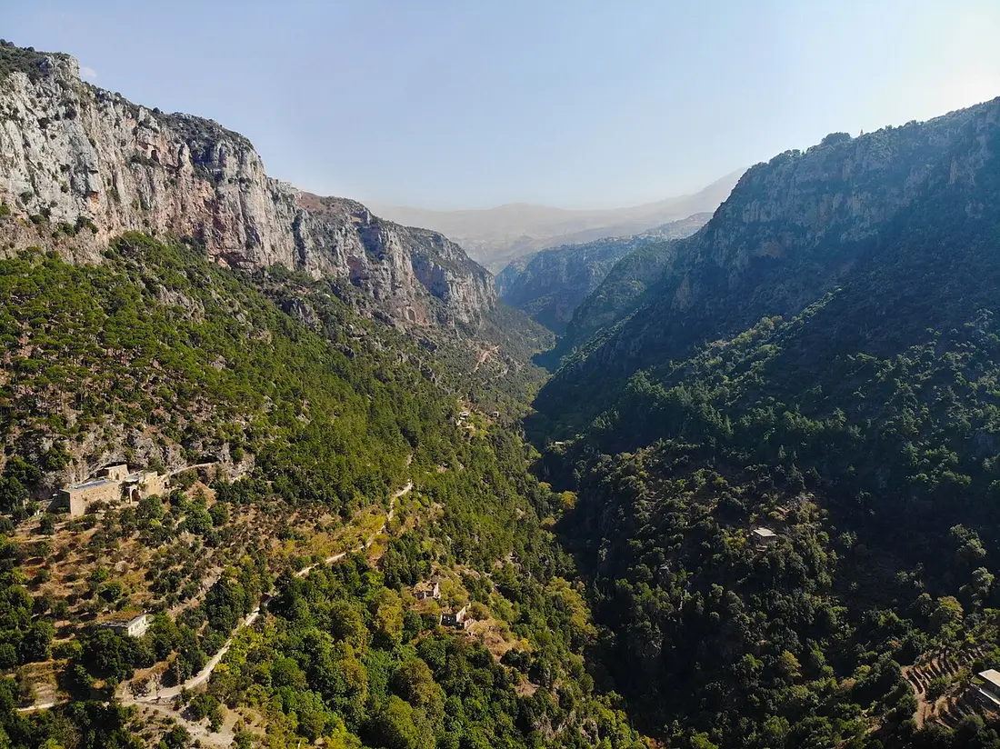

Qannoubine, the Fortress-Convent of the Patriarchs
At the bottom of the Holy Valley's northern branch, half built and half carved into the cliff, stands the monastery that held the Maronite Church together through its hardest centuries. For nearly four hundred years the patriarchs governed from this gorge - and a small community of nuns keeps it still.

The Monastery Par Excellence
The name says what it was. Qannoubine is a Syriac word of Greek origin meaning simply "the monastery" - the one that needed no other name, because for centuries it was the first monastery of the Maronite nation. Tradition carries its founding back to the end of the fourth century, to the age of the emperor Theodosius, when hermits first filled the caves of the Holy Valley. In 1998 UNESCO inscribed the Qadisha Valley - with Qannoubine at its heart - on the World Heritage List.
Seat of the Patriarchs, 1440 to 1823
After the last Mamluk attack on the old patriarchal seat at Ilige in 1440, the Maronite patriarchs withdrew into the mountain. From that year the seat was here, deep in the gorge, and twenty-four patriarchs governed the Church from Qannoubine across nearly four centuries - through Ottoman rule, famine, and persecution - until the seat moved down to Dimane in 1823, and later to Bkerke.
They did not govern from a palace. Qannoubine is a fortress only by geography: cells and a church cut into the rock itself, reachable then as now by steep paths. Seventeen of the patriarchs are buried here; their names are carved in Syriac on a stone erected in 1909 in the cave chapel of Saint Marina beside the monastery.
The Church and Its Frescoes
The church, half built into the rock, keeps wall paintings from the patriarchal centuries. The eastern apse holds a Deisis - Christ enthroned, flanked by interceding saints - except that here Saint Stephen takes the usual place of John the Baptist: the patriarch who commissioned the work bore his name. Smaller apses show Saint Joseph holding the Child in one hand and a carpenter's saw in the other, and the prophet Daniel in the lions' den.
Above all stands the great Coronation of the Virgin, some four and a half meters square, commissioned from the painter Boutros the Cypriot by Patriarch Estephan Douaihy - the scholar-patriarch who gave the Maronite Church its written history - at the end of the seventeenth century. Fifteen mitred patriarchs walk in procession toward the crowning of Mary as Queen of Lebanon. When the painter Moussa Dib of Dlebta restored the fresco in 1781, he lettered each patriarch's name in Syriac beneath the figures, so we still know who walks in the procession.

The Cave of Saint Marina
Beside the monastery, a cave chapel keeps the memory of Marina the Monk. The old vita tells of a woman who entered a monastery of the valley dressed as a man and lived out her life unrecognized as a monk - a story the Maronite tradition places at Qannoubine, where she is honored as Saint Marina. It is her cave chapel that later received the bones of the patriarchs.
The Nuns Who Keep It
A handful of nuns live at Qannoubine all year round, through snow and silence alike, keeping the prayer of a monastery you can only reach on foot. What they keep is not a museum but a working monastery - visitors are welcome, with modest dress and quiet.
Walking Down to Qannoubine
Qannoubine is earned on foot. Paths descend from the rim towns on the Bsharri side of the valley - from the villages above the gorge, around Hadath el Jebbeh and Blouza - and a rough track runs along the valley floor. Allow the better part of an hour for the descent, and more for the climb back. Spring brings wildflowers and the full river; autumn is golden and quiet; in winter the high paths can close under snow. The walk is half the meaning of the visit: you arrive the way the patriarchs arrived.
Qannoubine lies inside the Qadisha Valley, and our valley guide covers the monasteries, the hermitages, and the seasons in full.
Pair It With the Rest of the Holy Valley
Across the valley, on the branch beneath Ehden, stands Qozhaya, the Monastery of Saint Anthony - reachable by car, and home to the press that printed the first book of the eastern Ottoman Empire. Above the gorge sits Bekaa Kafra, Saint Charbel's birthplace, looking down into the valley that formed his Church. The Saint Charbel Trail links his places across Mount Lebanon on foot, and our guide to Saint Charbel places in Lebanon maps the whole country.
Frequently Asked Questions
What is Qannoubine?
A medieval rock-cut monastery in the Qadisha Valley of North Lebanon. It was the seat of the Maronite patriarchs from 1440 to 1823 and lies inside the UNESCO World Heritage listing of 1998.
How many patriarchs lived at Qannoubine?
Twenty-four patriarchs governed the Maronite Church from Qannoubine between 1440 and 1823. Seventeen of them are buried in the cave chapel of Saint Marina beside the monastery, their names recorded on a stone of 1909.
What is the Coronation of the Virgin at Qannoubine?
The monastery's great fresco, commissioned by Patriarch Estephan Douaihy at the end of the seventeenth century: the Virgin crowned as Queen of Lebanon, with fifteen Maronite patriarchs walking in procession. It was restored in 1781.
Can you visit Qannoubine today?
Yes. It remains a working monastery, kept all year by a small community of nuns. Visitors are welcome with modest dress and quiet.
How do you get to Qannoubine?
On foot. Steep paths descend from the rim towns above Bsharri, and a rough track runs along the valley floor. There is no car road to the monastery itself - the walk down is part of the visit.
Is Qannoubine the same as the Qadisha Valley?
Qannoubine is one of the Qadisha's two great branches - the patriarchal one. The other, running beneath Ehden, is Qozhaya, home of the Monastery of Saint Anthony.
Sources
- LebanonUntravelled: Saint Kannoubine Monastery - the fortress-palace of the patriarchs, the church and its frescoes
- SyriacPress (May 2022): The Coronation of the Virgin at Qannoubine, part 1 - Douaihy's commission and the meaning of the name
- SyriacPress (May 2022): The Coronation of the Virgin at Qannoubine, part 2 - the fifteen patriarchs, the 1781 restoration, and the 1909 burial stele
- UNESCO World Heritage List: Ouadi Qadisha (the Holy Valley) and the Forest of the Cedars of God, inscribed 1998